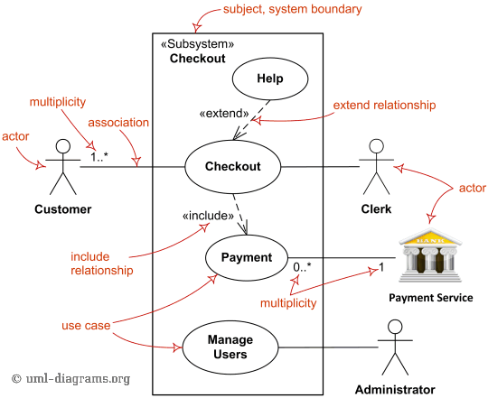
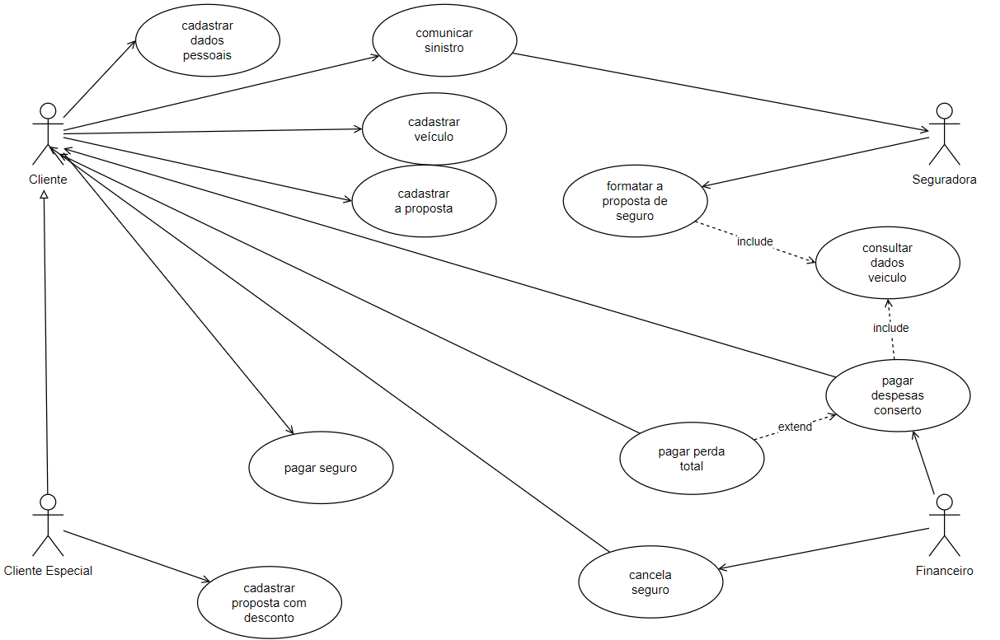
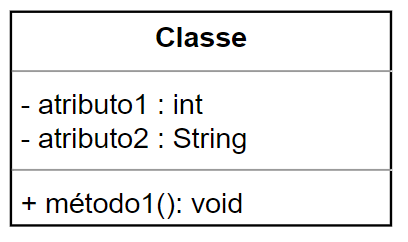
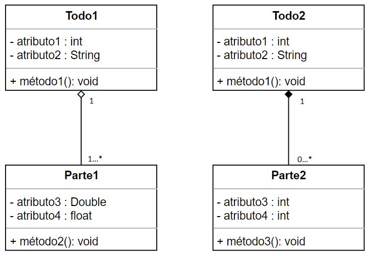
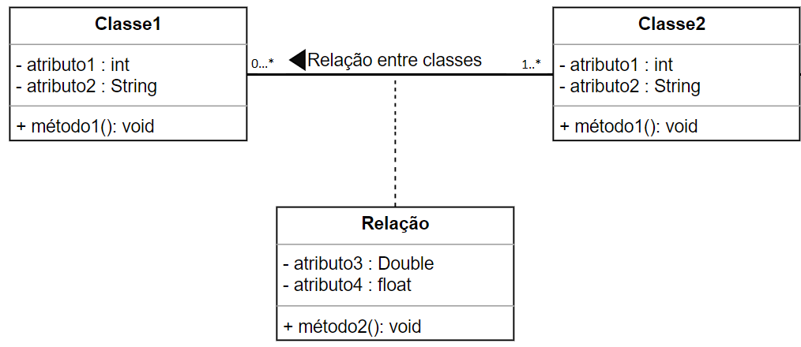

Engenharia de Requisitos
Assuntos
- Aviso
- Tipos e Elicitação de Requisitos de Software
- Modelagem, Validação e Verificação de Requisitos
- Bibliografia
Aviso
Essa matéria irá aprofundar o conteúdo que aprendemos na disciplina de Fundamentos de Engenharia de Software.
Tipos e Elicitação de Requisitos de Software
Características e Tipos de Requisitos
Conceitos e Características de Requisitos
Os conceitos são palavras dotadas de significados objetivos. Ao longo de todos os nossos estudos, nós, basicamente, estamos aumentando nosso repertório de conceitos e ligando conceitos novos aos que já aprendemos previamente. Desse modo, não é nenhuma novidade começar nosso estudo por meio da definição dos conceitos que vamos usar ao longo do microfundamento.
Chamamos de Requisito toda Característica que um produto deve possui para ser aceito. Dessa feita, podemos definir como Engenharia de Requisitos, o conjunto das técnicas usadas para levantamento, detalhamento e validação desses requisitos de um produto.
Ao tomarmos notas a respeito dos requisitos, precisaremos garantir que os mesmos tenham as seguintes Características:
- Completude - Descrição integral da necessidade a ser atendida.
- Correção - Descrição exata e associada ao software que será desenvolvido.
- Exequidade - Um requisito de ser passível de execução.
- Prioridade - Descrição do nível: Obrigatório, Desejável ou Opcional.
- Modificação - Capacidade de alteração do requisito ao longo do processo.
- Verificabilidade - Capacidade de se realizar testes que verifiquem se o requisito fora alcançado.
- Rastreabilidade - Relação entre código e requisito de maneira clara e recíproca.
Tipos de Requisitos
Podemos separar os requisitos segundo a sua relação com a funcionalidade do software:
- Requisito Funcional - É diretamente relacionado ao funcionamento do programa. Descreve uma função a ser desempenhada pelo produto com maior foco no negócio e não na tecnologia.
-
Requisito Não Funcional - É relacionado a tecnologia de desenvolvimento. Ele especifica/restringem o comportamento desejado do software.
- Requisito de Desempenho - Especifica atributos como velocidade ou consumo de memória que o sistema deve ter.
- Requisito de Confiabilidade - Especifica a taxa aceitável de falhas do sistema.
- Requisito de Proteção - Relacionado a segurança do software.
- Requisito de Usabilidade - Características desejadas de usabilidade.
Elicitação de Requisitos de Software
Processos da Engenharia de Requisitos e Técnicas de Elicitação
Elicitar é o processo de extrair ou obter o máximo de informação possível para o conhecimento de um objeto desejado. Logo, Elicitação de Requisitos é o processo de extrair dos clientes as reais necessidades da demanda dele, ou seja, os requisitos da demanda. Além disso, a classificação desses requisitos nas categorias que aprendemos na seção passada.
Para se extrair essas informações podemos usar uma miríade de técnicas:
- Entrevista - Com roteiro para as principais questões. Prioritariamente algo rápido e não cansativo. Pode ser individual ou em grupo.
- Brainstorming - Reunião sem roteiro definido. A criatividade é o foco na construção de propostas de resolução de um determinado problema.
- Questionário - Com perguntas fechadas ou abertas. Tem como vantagem a praticidade.
- Protótipo - É indicado para situações onde o user não tem facilidade em se expressar. A elicitação é feita pela interação entre user e protótipo.
- Etnografia - É a observação da realidade do cliente por um período.
Após as coletas de todas as informações, passamos para fase de Estudo de Documentos em que os dados serão convertidos em requisitos funcionais e não funcionais do projeto.
Modelagem, Validação e Verificação de Requisitos
Modelagem de Requisitos
Modelagem de Requisitos e Introdução à UML
A Unified Modeling Language (UML) é uma linguagem de modelagem unificada. Surgida em 1997 como resultado de um esforço de várias empresas para a construção de um padrão para a modelagem de engenharia de software. Vale ressaltar que a UML não é uma metodologia e apenas uma maneira de expor processos de software.
A Modelagem de Requisitos ou Análise de Requisitos é a produção da lista de requisitos funcionais e não-funcionais para um projeto. Para padronização desses produtos, usamos a UML como linguagem de representação.
A UML possui 3 tipos de diagramas:
-
Diagrama de Estrutura - Foco na visão estática.
- Diagrama de Classes
- Diagrama de Pacotes
-
Diagrama de Comportamento - Foco na visão dinâmica.
- Diagrama de Caso de Uso
-
Diagrama de Interação - Representação da comunicação entre objetos.
Modelagem de Casos de Uso UML
Como acabamos de ver, o diagrama de casos de uso é um tipo de diagrama de comportamento e, logicamente, tem foco no comportamento dinâmico entre as partes envolvidas no funcionamento do sistema.
O diagrama de casos de uso é geralmente o primeiro diagrama UML usado na fase de requisitos pois permite o detalhe dos requisitos funcionais na fase de elicitação. É importante notar que, por ter foco na interação entre as partes, esse tipo de diagrama não é usado para elicitação dos requisitos não-funcionais.
As partes integrantes do diagrama de casos de uso são:
- Atores - São as representações da entidades que interagem com o sistema. Sejam elas seres humanos, sensores ou outros sistemas.
- Casos de Uso - São as transações entre as partes.
-
Relacionamentos - Podem ser divididos em quatro tipos:
- Associação - É o relacionamento mais comum. Representado por uma seta aberta (ou uma linha reta) que liga os atores aos casos de uso. Não pode ligar atores a atores ou casos de uso a casos de uso.
- Generalização - Acontece quando há uma relação de herança entre elementos. Pode acontecer entre atores e atores e casos de uso e casos de uso.
- Inclusão (Include) - São usados para representar rotinas comuns entre transações do sistema por meio do uso de uma seta pontilhada com a lable de include. Só ocorre entre casos de uso.
- Exclusão (Extend) - É usada para indicar exceções. Tem a notação parecida com o include mas no lable está escrito exclude.
Abaixo temos um exemplo desse diagrama.

Práticas de Diagrama de Casos de Uso
Essa seção é um exercício proposto de construção de um diagrama de casos de uso. O problema proposto é:
O cliente cadastra os dados pessoais, depois do veículo e finalmente a proposta da seguradora.
Alguns clientes são da categoria "especial" do programa de fidelidade da seguradora e cadastram as propostas de seguros com desconto.
A seguradora formata a proposta baseada nos dados dos veículos cadastrados. Depois, os clientes pagam as prestações do seguro.
Caso haja inadimplência, a seguradora cancela o seguro. Comunicando o cliente.
Em caso de acidente, o cliente comunica o sinistro à seguradora. Ela paga as despesas do conserto. Em casos raros, a seguradora paga ao cliente o valor integral do veículo.
Comentário: Antes de olhar como ficou. Tente fazer o diagrama sozinho. Uma boa ferramenta para isso é o Lucidchart ou o Draw.io.
Abaixo temos uma representação de caso de uso possível para o caso exemplo.

Modelagem de Classes UML
Começaremos a ver os diagramas de estrutura pelo Diagrama de Classes de UML. Seu objetivo é definir a estrutura estática de relacionamento entre classes.
Lá em programação modular nós aprendemos que uma classe é um conjunto de objetos com propriedades similares. Toda classe tem um nome e atributos que descrevem as suas propriedades. Além disso, possuem métodos que são as funções internas da classe.

Comentário: Esse último parágrafo faz muito sentido para todos que já passaram pela matéria de programação modular. Se não for o seu caso, corre lá depois que terminar esse microfundamento.
Também sabemos que classes podem ser relacionadas entre si pela relação de herança que é um dos pilares da programação orientada à objetos. No contexto da UML, podemos chamar essa relação de herança de Generalização-Especialização. A representação entre a superclasse e as classes filhas é feita com o uso de uma seta de ponta fechada onde a seta sempre sai da subclasse e aponta para a superclasse.

O outro modelo de relacionamento é a agregação ou Estrutura Todo-Parte. Nesse relacionamento não há herança, entretanto, existe alguma relação de pertinência de modo que cada parte é um elemento do todo. Possui a representação da multiplicidade (1...*) para indicar a quantidade de itens que o relacionamento suporta.
A agregação pode ser representada de dois modos. Na Agregação Simples usamos um losango em branco e indica que a parte possui vida além do todo1. Por outro lado, na Agregação por Composição, usamos o losango preenchido para indicar que a parte não tem vida além do todo.

Comentário: A ideia nessa dotação da multiplicidade é simples. Imagine que temos uma classe "Estoque" e uma classe "Produto". Uma vez que um estoque é justamente o todo dos produtos armazenados, é plenamente possível termos a relação entre essas classes. Podemos usar a relação de agregação para indicar esse caso. Quando ligamos as classes, nós indicamos quantos objetos são aceitos na relação. No nosso exemplo é possível termos um estoque de zero itens2 de cada produto, logo, a multiplicidade indicada será de 0...* que deve ser lida como ``Podemos ter entre zero e n produtos no nos" estoque".
Para terminar essa seção, temos apenas mais uma relação a ser aprendida. Na Associação, também não temos relação de herança e também temos multiplicidade. A diferença está no fato que não existe relação de todo e parte, ou seja, o vínculo entre as classes é mais fraco.
Normalmente, a associação é indicada por uma linha reta entre as classes com as multiplicidades com asteriscos nos dois lados. Além disso, podemos ter uma classe `"endurada" entre a associação para indicar o modo.

Modelagem de Pacotes UML
Uma vez que tenhamos feito nossos diagrama de classes, temos um diagrama que é capaz de "empacotar" classes relacionadas. Esse diagrama recebe o nome de Diagrama de Pacotes. Tal qual o diagrama de classes, o diagrama de pacotes é um digrama estrutural da UML.
Não existe muita exatidão no processo de construção de pacotes. A ideia é que a associação entre classes faça sentido e, nessas horas, o bom senso é a nossa melhor ferramenta.
No geral, podemos elencar algumas regras para nos ajudar na criação de pacotes:
- Deve ter duas ou mais classes
- Nome genérico ou da classe mais importante
- Representação na UML pelo ícone da uma pasta
- Uma classe pode pertencer a mais de um pacote
- Nenhuma classe deve ficar fora do diagrama de pacotes
- Um pacote pode depender de outros pacotes
- A dependência de pacotes é dada no UML pelo uso de uma seta pontilhada

Validação e Verificação de Requisitos
Validação e Verificação de Requisitos
Uma vez que temos nosso sistema modelado, podemos nos perguntar se ``estamos construindo o pro"to certo". Chamamos de validação o trabalho de verificação da resposta a essa pergunta. Ou seja, estamos verificando a eficácia da nossa solução.
Do outro lado, dizemos que a verificação tem relação com a eficiência. Isso quer dizer que queremos saber se além de cumprir o objetivo, nossa solução o faz com a otilização dos recursos de maneira certa.
Para realizarmos essas duas verificações podemos fazer uso da Revisão Técnica que avalia esses aspectos por meio um time das partes envolvidas no processo para a busca das seguintes falhas:
- erros no conteúdo\interpretação
- informações faltantes
- inconsistências
- requisitos conflitantes\irreais
Para realizar essas verificações, podemos usar várias abordagens:
- Inspeções de Código
- Comandos de Banco de Dados
- Análise dos Requisitos
- Testes de Software
Bibliografia
- SOMMERVILLE, Ian. Engenharia de Software. São Paulo: Pearson, 2019.
- BEZERRA, Eduardo. Princípios de Análise e Projeto de Sistemas com UML. São Paulo: Elsevier, 2006.
- PRESSMAN, Roger; MAXIM, Bruce. Engenharia de Software. São Paulo: Bookman, 2016.
- LARMAN, Craig. Utilizando UML e padrões: uma introdução á análise e ao projeto orientados a objetos e desenvolvimento iterativo. 3. ed. Porto Alegre: Bookman, 2007. E-book (695 páginas) ISBN 9788577800476.
- PAULA FILHO, Wilson de Pádua. Engenharia de software, v. 2 projetos e processos. 4. Rio de Janeiro LTC 2019 1 recurso online ISBN 9788521636748.
- WAZLAWICK, Raul Sidnei. Engenharia de software conceitos e práticas. Rio de Janeiro GEN LTC 2013 1 recurso online ISBN 9788595156173.
- GUEDES, Gilleanes. UML 2 - Uma Abordagem Prática. São Paulo: Novatec, 2018.